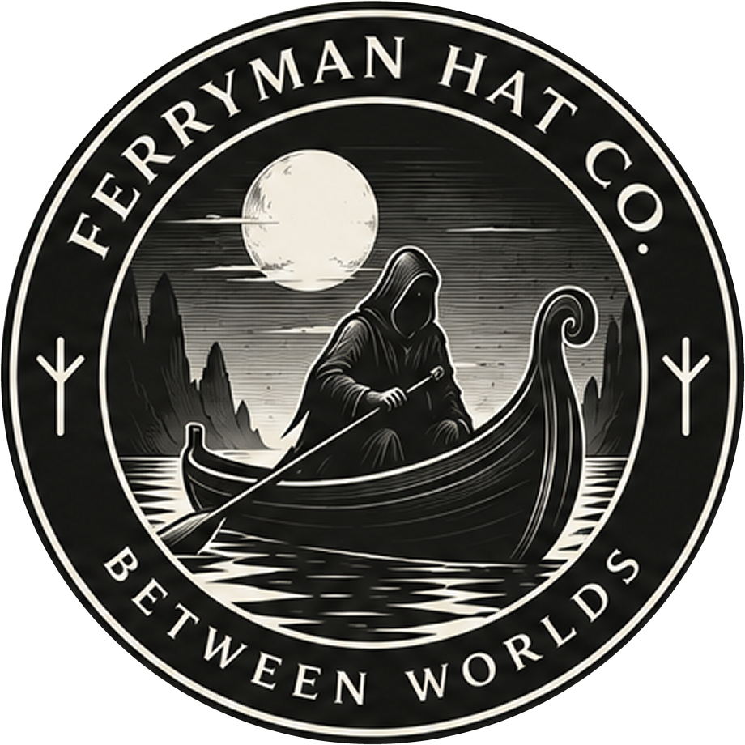

A hat for the crossing
Made by hand in Kulosaari.
Ferryman Hat Co. is a small artisanal hat maker from Kulosaari, Helsinki. Each hat is blocked, shaped and finished by hand, with an eye for proportion, material and the weather it will meet. The best experience of custom hat-making comes from an in-person appointment with Ferryman in Kulosaari. Inquiries via hats@ferrymanhats.com.
The name comes from the ferryman between worlds: anonymous, quiet and inevitable. The mythology stays in the atmosphere. The craft stays real.
FERRYMAN HAT CO.
KULOSAARI, HELSINKI
